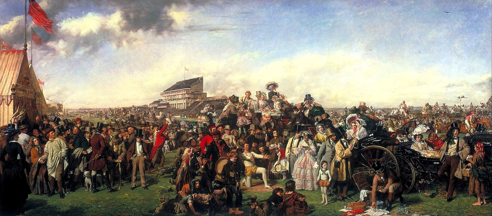

A Public Holiday

Télécharger la séquence
Anglais · Terminale bac pro · toutes filières · LVA, B1 vers B1+ (Help : A2+ vers B1 ; Going further : vers B2)
Format retenu : projet pédagogique, avec une tâche finale. Ce format convient au BO, qui place l’élève au centre d’un projet pour effectuer des tâches proches de la vie courante ou professionnelle, et qui demande une production finale coordonnée, orale ou écrite.
Six lessons de 55 minutes, minutées sur 52 minutes. Tâche finale, lesson 5 : en équipe, préparer et présenter le stand ou l’accueil d’un jour férié britannique ou irlandais (menu ou offre, horaires, consignes, accueil des visiteurs). L’interaction orale se joue à l’accueil du stand.
Question directrice : How do you welcome visitors on a public holiday?
Présentation (version prof)
Public : Terminale baccalauréat professionnel, lycée professionnel (ministère de l’Éducation nationale). Cette séquence n’est pas écrite pour le bac pro agricole.
Programme : BO spécial n° 5 du 11 avril 2019. Thèmes culturels : jours fériés, fêtes, traditions, alimentation, tourisme, parfois sport. Thèmes professionnels : accueil, horaires, offrir un service, chiffres et prix, codes de courtoisie.
Les cinq activités langagières sont travaillées, y compris l’interaction à l’accueil du stand.
Chaque lesson dure 55 minutes, minutée sur 52 minutes, avec un point d’arrêt et une sortie de secours de 8 minutes. Une seule progression pour toute la classe : les encadrés Help aident les élèves encore vers B1 ; les encadrés Going further proposent une tâche plus longue, vers B2. La différenciation se fait dans la lesson, pas par des parcours séparés.
Ordre habituel d’une lesson : rappel et flashcards ; question du jour ; document (texte, image ou audio) lu avec la spirale de Gorse ; Expanding your vocabulary ; Étude de la langue (un point utile pour la tâche du jour) ; exercices, du repérage à la production, avec corrigés en Version prof ; tâche d’oral, y compris l’interaction, pour que chacun parle au moins une fois ; trace écrite ; homework.
En l’absence d’enregistrement audio, lisez le transcript à voix haute trois fois, avec une minute entre les lectures, comme à l’épreuve.
Lessons at a glance
| Lesson | Titre | Question du jour |
|---|---|---|
| 1 | A Day at the Derby | Who is working, and who is on holiday, in this picture? |
| 2 | Calendar and Closing Days | Which public holidays should a workplace know? |
| 3 | Food, Hours and Rules | What must a visitor know before they arrive? |
| 4 | Roles in the Team | Who does what on the stand? |
| 5 | The Stand (tâche finale) | Can your team welcome a visitor, and answer questions? |
| 6 | CCF blanc | Entraînement à l’épreuve, Version prof |
Spirale de Gorse
Méthode conçue par Madame Carole Paoli Pompougnac. Le nom rend hommage à sa grand-mère par alliance, Madame Armandine Gorse, avec un S. On gravit un texte, un audio ou une image comme une pente : chaque tour est une prise plus haute. On part de ce qui saute aux yeux, puis l'attention se resserre, jusqu'à la pointe, le sommet où l'essentiel se laisse voir. Quatre tours, puis la pointe. Dans chaque lesson, appliquez la spirale au document principal (texte, image ou audio). Les réponses détaillées restent en Version prof.

Je remarque (I notice)
Ce qui saute aux yeux, la première impression.
I notice… / This is about…
Je repère (I spot)
Un détail, un passage, un élément plus net.
I spot… / The key word is…
Je comprends (I understand)
Ce que ces éléments permettent de comprendre.
This shows that… / They have in common…
J'anticipe (I anticipate)
La visée du texte, ce qu'il faut en faire.
The text wants me to… / I anticipate…
Je trouve le sens (I find the meaning)
La pointe : l'essentiel que l'on peut défendre, et sa limite.
The point is… / But I must not…
Exemple travaillé, sur The Derby Day de Frith (version prof)
| Tour | Question du professeur | Réponse attendue | Ce qui se resserre |
|---|---|---|---|
| 1. Je remarque | Qu’est-ce qui saute aux yeux ? | Une foule dense, des voitures, des habits clairs, un jour de course. | C’est une fête publique, pas un salon privé. |
| 2. Je repère | Qui travaille dans le tableau ? | Des vendeurs, un acrobate, un homme au chapeau qui propose un jeu, des domestiques près des voitures. | La fête fait aussi travailler : ce n’est pas seulement un loisir. |
| 3. Je comprends | Que permet de comprendre ce mélange ? | Un jour férié ou un grand jour de sport est un moment d’accueil, de vente, de service, et parfois de désordre. | On relie la toile à la tâche : accueillir, informer, vendre ou servir. |
| 4. J’anticipe | Que ferons-nous de cette toile dans le projet ? | S’en servir pour penser les rôles (accueil, information, caisse, sécurité légère) et les horaires. | On anticipe le hors-sujet : une leçon sur les courses de chevaux seulement. |
| 5. Je trouve le sens | L’essentiel, et sa limite ? | Un jour de fête est un jour de travail pour beaucoup de gens. Limite : on n’idéalise pas la foule ; on prépare un accueil clair. | Une phrase qui ouvre le projet d’équipe. |
Lesson 1 · A Day at the Derby
Activités : CE, PE, PO, interaction.
By the end of this lesson, I can: describe a crowd on a public day, and name people who are working in the picture.
Question du jour : Who is working, and who is on holiday, in this picture?
Spirale de Gorse
Dans chaque lesson, appliquez la spirale au document principal (texte, image ou audio). Les réponses détaillées restent en Version prof.
Je remarque (I notice)
Ce qui saute aux yeux, la première impression.
I notice… / This is about…
Je repère (I spot)
Un détail, un passage, un élément plus net.
I spot… / The key word is…
Je comprends (I understand)
Ce que ces éléments permettent de comprendre.
This shows that… / They have in common…
J'anticipe (I anticipate)
La visée du texte, ce qu'il faut en faire.
The text wants me to… / I anticipate…
Je trouve le sens (I find the meaning)
La pointe : l'essentiel que l'on peut défendre, et sa limite.
The point is… / But I must not…
Minutage (52 minutes)
| Minutes | Étape | Activité |
|---|---|---|
| 0 à 6 | Diagnostic, non noté : Name one public holiday you know in an English-speaking country. | PE |
| 6 à 22 | Spirale de Gorse sur The Derby Day. | CE, PO |
| 22 à 30 | Expanding your vocabulary. | CE |
| 30 à 38 | Étude de la langue : there is / there are ; in the foreground / in the background. | PE |
| 38 à 46 | Interaction : Find two workers and one visitor in the painting. Agree on the words. | PO, interaction |
| 46 à 52 | Trace écrite, homework. | PE |
Point d’arrêt (minute 46). Deux travailleurs et un visiteur ont été nommés.
Help : utilisez I can see, this person is, a visitor is. Going further : choisissez un groupe du tableau et dites, en quatre lignes, ce dont il a besoin ce jour-là.
Sortie de secours (8 minutes). Trois phrases dictées sur le premier plan, le fond, un vendeur.
Expanding your vocabulary
| Word | Meaning | Example |
|---|---|---|
| a public holiday | an official day off, or a national day | New Year’s Day is a public holiday. |
| a crowd | a large group of people | A crowd has come to the Derby. |
| a stall / a stand | a small temporary shop | We will run a stall for the visitors. |
| a visitor | a person who comes for the day | Visitors need clear opening hours. |
| to welcome | to greet someone politely | We welcome visitors at the entrance. |
| opening hours | the times when you are open | Opening hours are 10 to 4 on a bank holiday. |
| a bank holiday | a public holiday in the UK and Ireland | Many shops have special hours on a bank holiday. |
Homework
Apprenez huit mots. En cinq lignes, dites qui travaille et qui se promène dans le tableau.
Lesson 2 · Calendar and Closing Days
Activités : CE, CO, PE, PO.
By the end of this lesson, I can: name key public holidays in the UK or Ireland, and say if a workplace is open, closed, or on special hours.
Question du jour : Which public holidays should a workplace know?
Spirale de Gorse
Dans chaque lesson, appliquez la spirale au document principal (texte, image ou audio). Les réponses détaillées restent en Version prof.
Je remarque (I notice)
Ce qui saute aux yeux, la première impression.
I notice… / This is about…
Je repère (I spot)
Un détail, un passage, un élément plus net.
I spot… / The key word is…
Je comprends (I understand)
Ce que ces éléments permettent de comprendre.
This shows that… / They have in common…
J'anticipe (I anticipate)
La visée du texte, ce qu'il faut en faire.
The text wants me to… / I anticipate…
Je trouve le sens (I find the meaning)
La pointe : l'essentiel que l'on peut défendre, et sa limite.
The point is… / But I must not…
Minutage (52 minutes)
| Minutes | Étape | Activité |
|---|---|---|
| 0 à 6 | Rappel. | PO |
| 6 à 18 | Écoute trois fois d’un message d’horaires. Compte rendu en français. | CO |
| 18 à 32 | Tableau des jours (texte d’entraînement, à compléter). | CE, PE |
| 32 à 40 | Étude de la langue : prepositions of time (on Monday, at 10, from… to…). | PE |
| 40 à 48 | Oral : Our workplace is closed on… / open from… to… | PO |
| 48 à 52 | Homework. |
Point d’arrêt (minute 48). Chaque élève a dit les horaires de son lieu, pour un jour férié.
Sortie de secours (8 minutes). Un seul jour (Christmas Day), deux horaires modèles.
Transcript (version prof)
Hello, this is a recorded message for the museum shop. On early May bank holiday we are open from ten in the morning to four in the afternoon. The café closes at half past three. On Christmas Day and Boxing Day we are closed. On New Year’s Day we open at twelve, and we close at four. Please check the website if you are travelling. Thank you for your visit, and have a good holiday.
Corrigé CO (version prof). Boutique du musée. Early May bank holiday : 10 h-16 h, café jusqu’à 15 h 30. Christmas Day et Boxing Day : fermé. New Year’s Day : 12 h-16 h. Vérifier le site avant de se déplacer.
Étude de la langue
On + jour : on Christmas Day, on Monday. At + heure : at 10. From… to… : from 10 to 4.
Exercice 1. Écrivez les horaires de votre lieu, pour un jour férié de votre choix, en cinq phrases.
Homework
Complétez un mini-calendrier de quatre jours (un fermé, un ouvert, un horaire spécial, un jour irlandais ou britannique de votre choix, vérifié).
Lesson 3 · Food, Hours and Rules
Activités : CE, PE, PO, interaction.
By the end of this lesson, I can: write a short visitor card (hours, one offer, one rule).
Question du jour : What must a visitor know before they arrive?
Spirale de Gorse
Dans chaque lesson, appliquez la spirale au document principal (texte, image ou audio). Les réponses détaillées restent en Version prof.
Je remarque (I notice)
Ce qui saute aux yeux, la première impression.
I notice… / This is about…
Je repère (I spot)
Un détail, un passage, un élément plus net.
I spot… / The key word is…
Je comprends (I understand)
Ce que ces éléments permettent de comprendre.
This shows that… / They have in common…
J'anticipe (I anticipate)
La visée du texte, ce qu'il faut en faire.
The text wants me to… / I anticipate…
Je trouve le sens (I find the meaning)
La pointe : l'essentiel que l'on peut défendre, et sa limite.
The point is… / But I must not…
Minutage (52 minutes)
| Minutes | Étape | Activité |
|---|---|---|
| 0 à 8 | Mise en commun des calendriers. | PO |
| 8 à 22 | Lecture de deux cartes visiteurs (modèles). Spirale de Gorse sur l’une d’elles. | CE |
| 22 à 32 | Étude de la langue : would you like…, please, you are welcome to, you may not. | PE |
| 32 à 44 | Rédiger la carte de l’équipe (offre liée à la spécialité : une pièce, un plat, un service, une démonstration). | PE |
| 44 à 50 | Interaction : poser une question de visiteur sur la carte d’une autre équipe. | interaction |
| 50 à 52 | Homework. |
Point d’arrêt (minute 44). La carte est rédigée.
Help : trois lignes (hours, food or goods, one rule). Going further : ajoutez une phrase pour un visiteur qui arrive tard.
Sortie de secours (8 minutes). Carte à trous : hours, offer, one rule.
Cartes modèles
SPRING BANK HOLIDAY. Our bakery stall is open from 10 to 4. Today we have fruit scones and tea. You are welcome to sit outside. Please keep the path clear for prams and wheelchairs.
BOXING DAY. The workshop is closed to sales, but we offer a thirty-minute visit at 11 and at 2. Please book. You may not touch the tools.
Homework
Finalisez la carte. Proposez un prix ou une indication claire (libre accès à la démonstration, ou prix d’un article), sans inventer de réduction trompeuse.
Lesson 4 · Roles in the Team
Activités : PE, PO, interaction, CE.
By the end of this lesson, I can: say my role on the stand, and hand over a piece of information to a teammate.
Question du jour : Who does what on the stand?
Spirale de Gorse
Dans chaque lesson, appliquez la spirale au document principal (texte, image ou audio). Les réponses détaillées restent en Version prof.
Je remarque (I notice)
Ce qui saute aux yeux, la première impression.
I notice… / This is about…
Je repère (I spot)
Un détail, un passage, un élément plus net.
I spot… / The key word is…
Je comprends (I understand)
Ce que ces éléments permettent de comprendre.
This shows that… / They have in common…
J'anticipe (I anticipate)
La visée du texte, ce qu'il faut en faire.
The text wants me to… / I anticipate…
Je trouve le sens (I find the meaning)
La pointe : l'essentiel que l'on peut défendre, et sa limite.
The point is… / But I must not…
Minutage (52 minutes)
| Minutes | Étape | Activité |
|---|---|---|
| 0 à 8 | Lecture d’une liste de rôles. | CE |
| 8 à 18 | Répartition dans l’équipe : accueil, information, offre, horaires. | interaction |
| 18 à 28 | Étude de la langue : I am in charge of… If I am away, you… | PE |
| 28 à 44 | Répétition courte de chaque rôle (une minute). | PO, interaction |
| 44 à 52 | Trace écrite et homework : fiche mots-clés pour la lesson 5. | PE |
Point d’arrêt (minute 44). Chaque rôle a été dit une fois.
Sortie de secours (8 minutes). Quatre rôles au tableau, une phrase chacun.
Homework
Fiche mots-clés seulement (pas de texte rédigé à lire demain). Un objet ou une image peut servir de support.
Lesson 5 · The Stand (tâche finale)
Activités : PO, interaction, PE.
By the end of this lesson, I can: welcome a visitor with my team, and answer two questions.
Question du jour : Can your team welcome a visitor, and answer questions?
Tâche finale du projet. Chaque équipe tient le stand trois à quatre minutes : accueil, horaires, offre, une consigne. Deux élèves de la classe, ou le professeur, jouent les visiteurs et posent des questions. Pas de lecture d’un texte rédigé.
Spirale de Gorse
Dans chaque lesson, appliquez la spirale au document principal (texte, image ou audio). Les réponses détaillées restent en Version prof.
Je remarque (I notice)
Ce qui saute aux yeux, la première impression.
I notice… / This is about…
Je repère (I spot)
Un détail, un passage, un élément plus net.
I spot… / The key word is…
Je comprends (I understand)
Ce que ces éléments permettent de comprendre.
This shows that… / They have in common…
J'anticipe (I anticipate)
La visée du texte, ce qu'il faut en faire.
The text wants me to… / I anticipate…
Je trouve le sens (I find the meaning)
La pointe : l'essentiel que l'on peut défendre, et sa limite.
The point is… / But I must not…
Minutage (52 minutes)
| Minutes | Étape | Activité |
|---|---|---|
| 0 à 6 | Installation des stands (tables, cartes, un objet). | |
| 6 à 46 | Passages des équipes, questions des visiteurs. | PO, interaction |
| 46 à 50 | Autoévaluation d’équipe, une phrase chacun. | PE |
| 50 à 52 | Homework : relire pour le blanc. |
Point d’arrêt. Une équipe non entendue passe en début de lesson 6.
Help : un rôle, trois phrases d’accueil, une question. Going further : improvisez une question imprévue (a closed desk, a lost child, a late visitor) and answer politely.
Sortie de secours (8 minutes). Un seul stand collectif, quatre phrases, deux questions.
Questions visiteurs possibles : What time do you close? Do you have something for children? Is it open on Christmas Day? How much is it? Where can I sit? Can I take a photograph?
Lesson 6 · Évaluation blanche au format du CCF et de l’épreuve ponctuelle (version prof)
Rappel du format officiel (arrêté du 17 juin 2020, annexe V ; grilles : note de service du 24 novembre 2021, BO n° 47 du 16 décembre 2021) :
- Situation A, écrite, 1 heure : compréhension de l’oral (document de 1 min 30 au plus, entendu trois fois, une minute entre les écoutes, compte rendu en français) ; compréhension de l’écrit (document authentique inconnu de 15 lignes de 70 caractères au plus, compte rendu en français) ; expression écrite (deux sujets au choix, l’un sur la vie quotidienne, l’autre sur la vie professionnelle, 100 à 120 mots au moins).
- Situation B, orale, 10 minutes : expression orale en continu, 5 minutes au plus, sur un travail, un projet, un produit, un service ou une expérience professionnelle, sans lecture ; notes et une image autorisées ; puis interaction, 5 minutes au plus.
- Élèves des établissements publics ou privés sous contrat et apprentis des CFA habilités : CCF. Autres candidats : épreuve ponctuelle, mêmes activités, une partie écrite d’une heure et une partie orale de dix minutes, au dernier trimestre. Les deux temps sont indépendants.
Chaque activité langagière est notée sur 20, puis compte pour un cinquième de la note finale. Niveau attendu : B1+ en LVA, A2+ en LVB.
Ce sujet sert d’entraînement blanc en Terminale. Version prof seulement, sauf la rubrique « L’élève ne peut pas venir en classe ou est hospitalisé ».
Transcript CO (version prof) :
Hello, and welcome to the city museum. This is information for visitors on the August bank holiday. The museum is open from ten to five. The shop and the café close at half past four. Entry to the main collection is in libre accès on that day, but you need a timed ticket for the temporary exhibition. Please book online, or at the desk before eleven. Families are welcome. There is a quiet room on the first floor if the crowd is too much. Thank you, and we hope to see you.
Corrigé CO (version prof). Musée, August bank holiday, 10 h-17 h. Boutique et café jusqu’à 16 h 30. Collection principale en libre accès ; exposition temporaire sur réservation (en ligne ou au bureau avant 11 h). Les familles sont les bienvenues. Une salle calme au premier étage si la foule est trop forte.
Texte CE (texte d’entraînement) :
A public holiday is a day off for some people, and a working day for others. In this sequence we have looked at Frith’s Derby Day, at opening hours, and at a stall that welcomes visitors. The final task was not a lecture on traditions. It was a short, clear welcome: hours, one offer, one rule, and two answers to a visitor. If you work in a shop, a restaurant, a salon, a garage or a public building, a bank holiday is a test of organisation, and of courtesy.
Questions : Qui travaille, qui est en congé ? Quels documents la séquence a-t-elle croisés ? En quoi consistait la tâche finale ? Pourquoi un jour férié est-il un test professionnel ?
Corrigé CE (version prof). Un jour férié est un congé pour les uns, un jour de travail pour les autres. Documents : toile de Frith, horaires, stand. Tâche : accueil court et clair (horaires, une offre, une règle, deux réponses). C’est un test d’organisation et de courtoisie, dans beaucoup de métiers.
Expression écrite. Sujet 1, vie professionnelle : Write the visitor card for your stand (100 to 120 words or more): day, hours, offer, one rule. Sujet 2, vie quotidienne : Invite a friend to a public holiday in the UK or Ireland: where you will go, what you will see, what time you will meet.
Situation B
Présentez, en cinq minutes, le stand de votre équipe : le jour choisi, les horaires, l’offre, votre rôle. Une image de la séquence est autorisée. Puis répondez aux questions.
Questions : Why did you choose this day? Who is working in Frith’s painting? What do you say if you are almost closing?
Grille nationale bac pro LVA (BO n° 47 du 16 décembre 2021, annexe 4), version prof
Chaque activité langagière est notée sur 20, puis ramenée pour un cinquième de la note finale. Repères de classe, alignés sur le B1+ visé en LVA (A2+ en LVB) :
| Activité | 1 à 5 | 6 à 10 | 11 à 15 | 16 à 20 |
|---|---|---|---|---|
| CO | Quelques mots isolés | Le sujet général est repéré | Les informations principales sont rendues en français | L’essentiel, des détails et le point de vue sont rendus |
| CE | Quelques éléments isolés | Le thème et quelques faits | Les informations principales, liées entre elles | L’essentiel, des détails et l’implicite |
| PE | Hors sujet ou trop court | Sujet abordé, langue encore hésitante | Sujet traité, 100 mots au moins, langue compréhensible | Argument nuancé, lexique professionnel, langue assez sûre |
| PO (continu et interaction) | Lecteur, propos très court | Présente avec aide, répond peu | Présente sans lire, répond de façon simple | Présente clairement, interagit, lexique de la séquence |
L’élève ne peut pas venir en classe ou est hospitalisé
L’épreuve blanche peut se faire à la maison ou à l’hôpital, sans aide, en respectant la durée. L’élève note l’heure de début et de fin. Le document audio, ou le texte lu par l’enseignante et enregistré, est déposé sur l’ENT ; l’élève l’écoute trois fois, avec une minute de pause entre les écoutes, sans revenir en arrière. L’oral se fait par enregistrement (présentation), puis par un échange au téléphone ou en visioconférence avec l’enseignante, ou à défaut par trois questions écrites envoyées après l’enregistrement. Version courte (fatigue) : une seule partie de l’écrit et la présentation orale.
Sources
- Programme de langues vivantes, BO spécial n° 5 du 11 avril 2019.
- Épreuve de langue vivante, arrêté du 17 juin 2020, annexe V ; grilles, BO n° 47 du 16 décembre 2021.
- William Powell Frith, The Derby Day, 1856-1858, Tate Britain, N00615, domaine public. Image : Wikimedia Commons.
© 2026 Madame Carole Paoli Pompougnac · CC BY-NC-SA 4.0